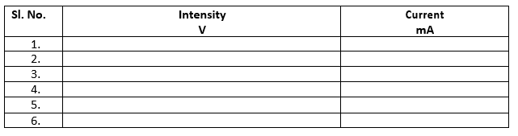
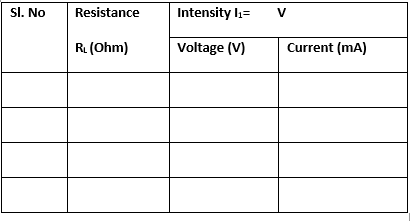
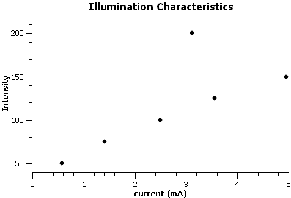
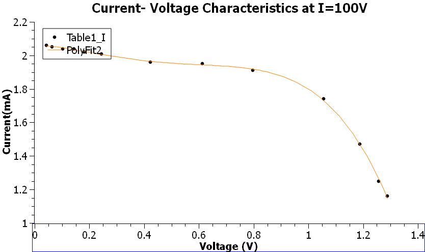

Procedure
- Illumination Characteristics
- To study the photovoltaic effect in solar cell, a 100W light bulb was used as the light source.
- The wire connections were made properly. The ammeter was connected with the solar cell for this measurement.
- The intensity was changed (say 50, 75,100 and so on) and the corresponding current measured.
- Plot the Intensity vs. Current curve.

- Current-Voltage characteristics
- The wires were connected properly. The connections were removed from the ammeter and inserted in the voltmeter. The red wire from the voltmeter was connected to the resistance box and black wire to the black slot in the ammeter. The
rest connection was done using a single red wire from ammeter to the resistance box.
- The intensity was fixed to a particular value, say 150V and 200V, and the resistance was changed and the voltage and current readings simultaneously noted down (up to 1100 Ohm).
- Plot the current (I) vs. voltage (V) (I on Y-axis and V on X-axis) for individual intensity.

- Power calculation
- The power generated was calculated, and the maximum power was noted.
- From the graph, we calculate Open-Circuit Voltage, Short-Circuit Current, and respective Voltage and Current at maximum Power
Precautions
- White light should be used; it enables meaningful spectral characteristics data generation.
- Surface of the solar cell should be clean.
- Light source should be perpendicular to the solar cell.
- The experiment should be conducted at a place with constant lighting conditions.
- A resistance should be introduced so as to keep the current in check. This ensured safety of the solar cell.
Sample Graphs

